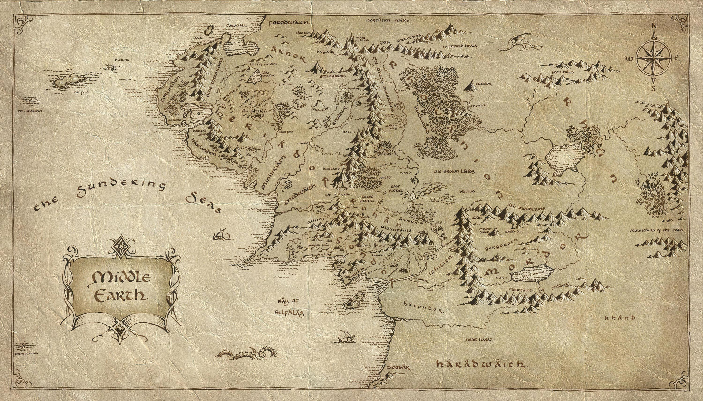

<html>
  <head>
    <meta charset="utf-8" />
    <meta name="viewport" content="initial-scale=1, maximum-scale=1, user-scalable=no" />
    <title>GIS Mapping - Middle Earth</title>

    <style>
      html,
      body,
      #viewDiv {
        padding: 0;
        margin: 0;
        height: 100%;
        width: 100%;
      }
    </style>

    <link rel="stylesheet" href="https://js.arcgis.com/4.21/esri/themes/dark/main.css">
    <script src="https://js.arcgis.com/4.21/"></script>
    <script src="map.js"></script>

  </head>
  <body>
    <div id="viewDiv"></div>
<!--     
    
    <map id="lotr-map" name="lotr-map">
      <area shape="circle" coords="1500, 850, 200" alt="the shire" href="Map_Assets/the_shire.jpg">
    </map> -->

  </body>
</html>